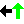
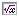

Back Tester Rules
The rules page allows you to assign one or more indicators to each of
the four trade actions. The four trade actions are:
- Enter Long - Enter a long trade if all indicators listed issue a
buy signal. A long position will only be entered if the rule is out or short.
- Exit Long - Exit a long trade if all indicators listed issue a sell
signal.
- Enter Short - Enter a short trade if all indicators listed issue
a sell signal. A short position will only be entered if the rule is out or
long.
- Exit Short - Exit a short trade if all indicators listed issue a
buy signal
You may use more than one indicator for each trading rule. In order for
a trade action to be triggered, each of the indicators listed must be true.
So, if you apply 2 indicators to the Enter Long action, both of the indicators
must have issued a "buy signal" for the action to take effect.

The button functions are:
Enter Long - Display any indicators that are assigned to enter long trades.

Exit Long - Display any indicators that are assigned to exit long trades.
Enter Short - Display any indicators that are assigned to enter short
trades.
Exit Short - Display any indicators that are assigned to exit short trades.

Add Indicator - Display a dialog in which you can select an indicator
to add to the rule currently selected.
 Edit Indicator - Allows you to edit the currently selected indicator.
Edit Indicator - Allows you to edit the currently selected indicator.
 Delete Indicator - Delete the currently selected indicator.
Delete Indicator - Delete the currently selected indicator.